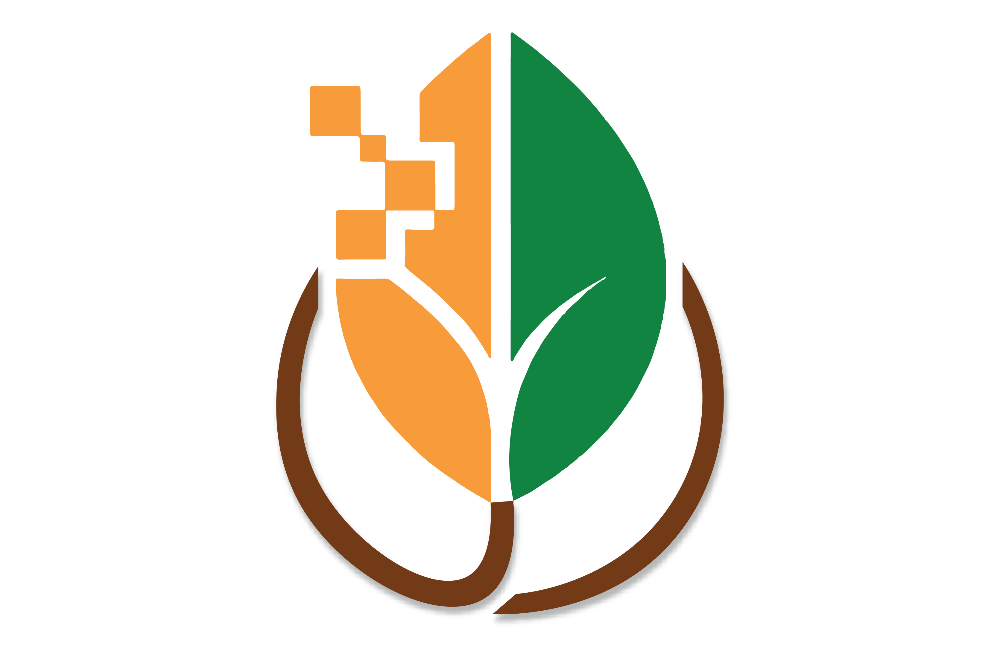

Food price stabilisation
Directly targets vegetable price inflation by maintaining a Rs. 10-15/kg variance band for enrolled produce categories.

Kissan Retail SathiThe model is aligned with Government of Odisha priorities, KALIA Scheme, MAMATA Scheme and National Food Security Mission implementation goals.
Directly targets vegetable price inflation by maintaining a Rs. 10-15/kg variance band for enrolled produce categories.
Integrates Aadhaar, PM-KISAN and bank DBT infrastructure for cashless, transparent and auditable payments.
FSSAI-licensed cold rooms align with MoFPI cold-chain development, NABARD eligibility and PLI co-funding pathways.
10 collection points and 50 outlets can create 500+ direct jobs, with NGO partnerships adding advisory and training roles.
The MSP plus bonus model helps farmers earn 2-4x the distress-sale price they currently receive at harvest.
1,000 farmers, 10 outlets, 100 cold rooms.
10,000 farmers, 50 outlets, 5 cold rooms.
1 lakh farmers, 500 outlets, statewide coverage.
10 lakh farmers, multi-state scale, IPO ready.